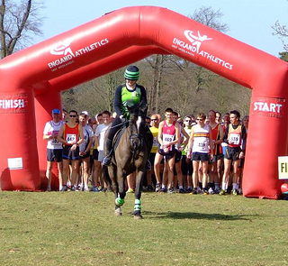

We would like to thank all you runners who tried so hard on this testing course that our results team were struggling to separate the many sprint finishes for position. We would also like to thank our marshals who did a great job coping with re-routing the course at the last minute to avoid the risk of falling branches as well as for the tremendous support they gave all the runners, our thanks also go to Steph, our lead horse rider.
Unfortunately our race HQ like the gantry was blown down even as we put it up so we apologise for any problems caused in finding the start and trying to read our signs which ended up at jaunty angles. As well as the wind to contend with the runners may also have noticed it slightly damp underfoot in places. We certainly noticed at as our four by four laying out the course became bogged down several times, we are grateful to Mark Phillips for towing it out one of the many occasions it got stuck. Finally thank you for your donations to the Grantham Foodbank, we will be handing them over with a cheque to help the important work that they do.
This 10k trail race takes place on 14th April 2013 at Belton House Grantham starting at 11:30. Entry is for attached entries and for un-affiliated runners for advance entries only, this allows entry to the horse show for you and a friend, children under 14 go free. There is no race entry on the day. Below is a photograph of the runners at the start waiting to be led round the course by the one of our four legged runners but don't be misled by the smooth flat grassy surface in the picture, once you leave the show jumping ring and run through the deer park you will encounter some rough terrain across old turf and some steep climbs through the sheep fields to the Tower and the woods, there may even be a stile or two in your way. We are able to have access this unique course and run up that fantastic hill by kind permission of The National Trust to whom we are very grateful for also allowing us all into the beautiful parkland which surrounds Belton House. This race is part of the Belton Horse trials festival so we have ample and well organised car parking, superb catering choices and enough toilets. Belton Horse Trials is perhaps eventings best kept secret? big enough to give you all the thrills and spills of international sport and a wide array of trade stands, yet small enough to feel you are really up close and personal with the stars of the sport!
There is something for everyone, with our popular Ladies Charity Lunch, Experts Eye Lunch with Course Walk and Judges. View Dressage Commentary, Stallion Parade, Classic Cars, Pony Club Games and much more.
Share the secret and bring your friends and family for a great day out in beautiful surroundings in the heart of Lincolnshire.
Our 2013 Charity is the Grantham foodbank, it has been set up under the auspices of Churches Together in Grantham and District to provide emergency help to local people in crisis. This foodbank is one of more than 100 such organisations set up through a franchise agreement with the Trussel Trust.